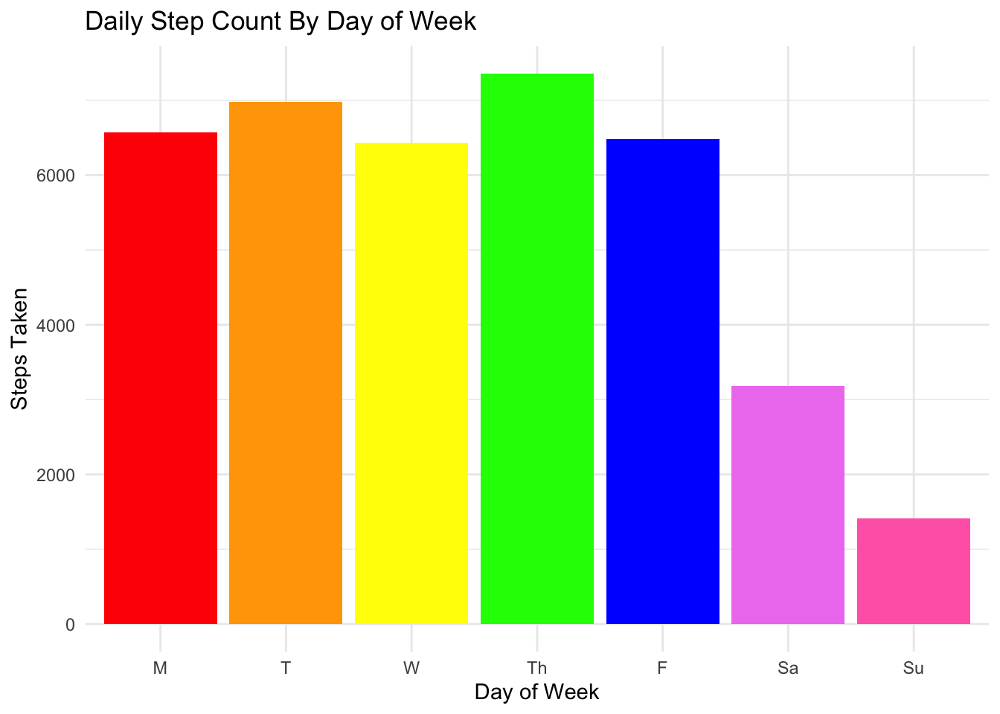
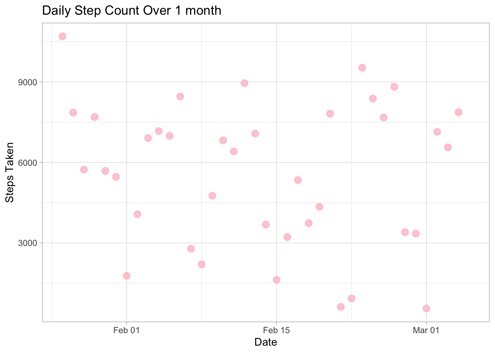
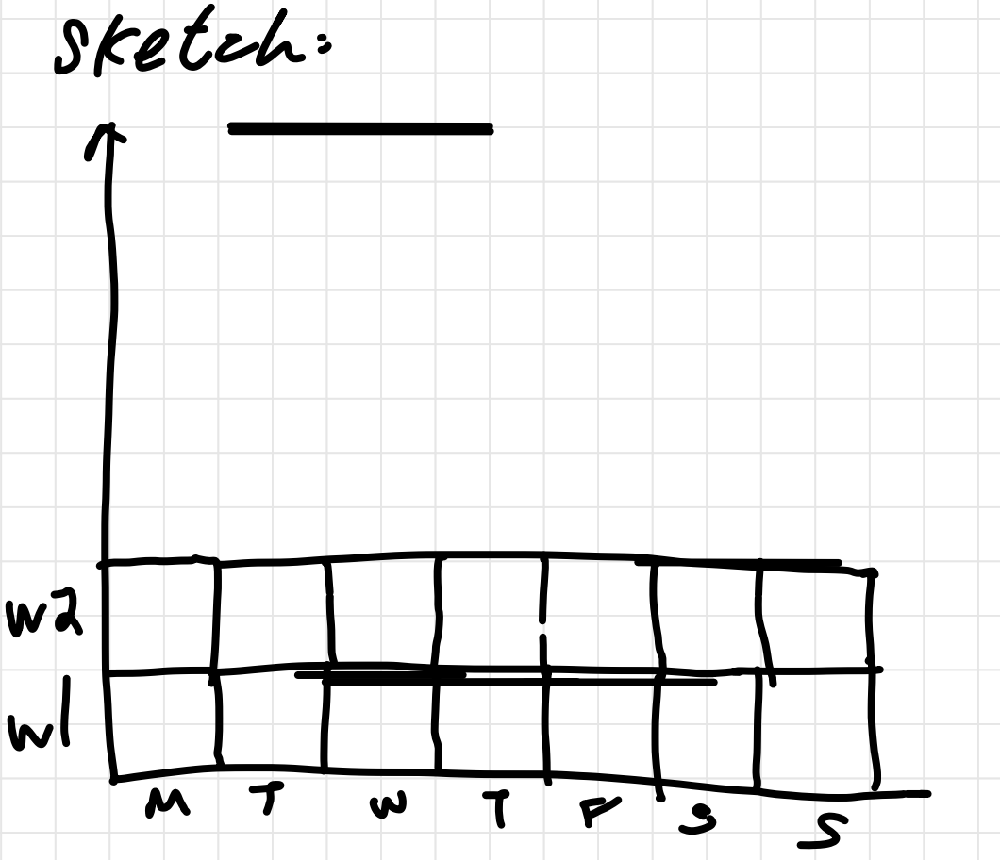
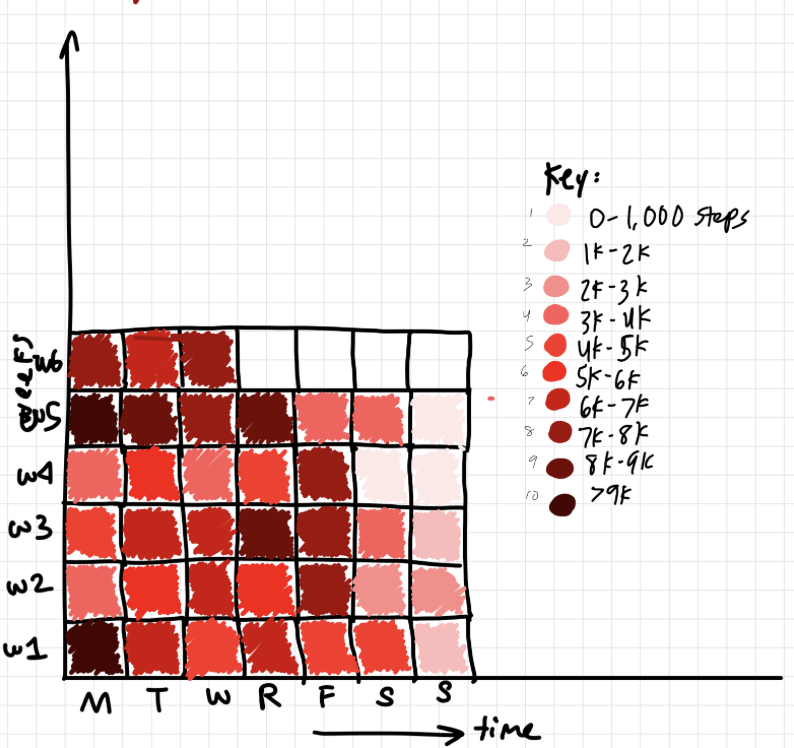
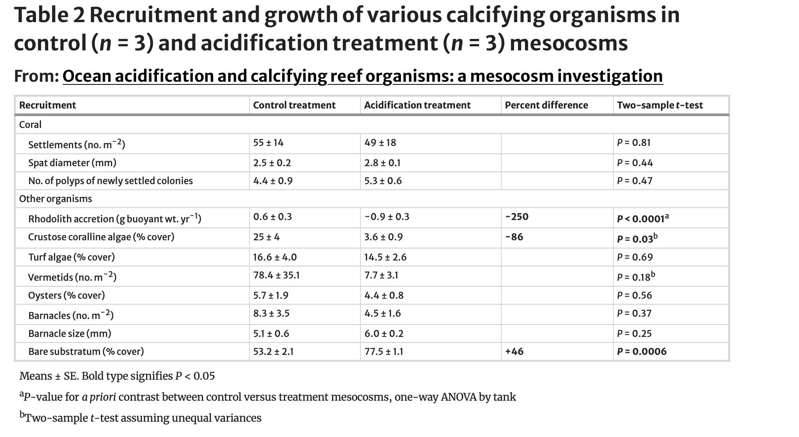

#reading in packages here
library(tidyverse)
library(here)
library(janitor)
library(readxl)
#reading in data here and making new object
salinity <- read_csv("../data/salinity-pickleweed.csv")
steps <- read_csv("../data/personaldata-updated.csv")envs193ds-homework-03
link to homework 3 GitHub repository
1. Set up
2. Problems
Problem 1. Sough soil salinity
- electrical conductivity (mS/cm)
a. An appropriate test
- Spearman’s correlation (\(\rho\))
- measures the strength and direction of a monotonic relationship (as one variable increases, the other consistently increases or decreases, but not necessarily linearly) between two variables
- Pearson’s correlation (r)
- measures the strength and direction of a linear relationship between two continuous variables
Pearson’s correlation measures the strength and direction of a linear relationship between two variables using their actual numerical values. Spearman’s correlation measures the strength and direction of a monotonic relationship by using the ranks of the data instead of just their numerical values. Because Spearman’s uses ranks, it doesn’t require normality and is less sensitive to outliers, while Pearson’s assumes a linear relationship and normally distributed data.
b. Creating a visualization
#base layer: ggplot
ggplot(data = salinity,
aes (x = salinity_mS_cm,
y = pickleweed)) +
#adding points and making them forest green
geom_point(color = "forestgreen") +
#adding a trendline
#adding labels and title
labs(title = "As soil salinity (mS/cm) increases, California pickleweed biomass also \n increases.",
x = "Soil Salinity (mS/cm)",
y = "California Pickleweed Biomass (g)")+
#changing default theme
theme_light()
c. Checking assumptions + running test (Spearman’s correlation)
check your assumptions
#base layer: ggplot
ggplot(data = salinity,
aes (x = salinity_mS_cm,
y = pickleweed)) +
#adding points and making them forest green
geom_point(color = "forestgreen") +
#adding a trendline
#adding labels and title
labs(title = "As soil salinity (mS/cm) increases, California pickleweed biomass also \n increases.",
x = "Soil Salinity (mS/cm)",
y = "California Pickleweed Biomass (g)")+
#changing default theme
theme_light()
qqnorm(salinity$salinity_mS_cm)
qqline(salinity$salinity_mS_cm)
qqnorm(salinity$pickleweed)
qqline(salinity$pickleweed)
The scatterplot shows a generally increasing relationship between soil salinity and California pickleweed biomass, indicating a positive monotonic trend. The pattern also appears approximately linear, so a Pearson’s correlation could be appropriate. The QQ plots also show an approximately normal distribution with no significant outliers, so our assumptions for the Pearson’s correlation are met.
run your test
cor.test(salinity$salinity_mS_cm, #data$predictor
salinity$pickleweed, #data$response
method = "pearson") #pearson's correlation
Pearson's product-moment correlation
data: salinity$salinity_mS_cm and salinity$pickleweed
t = 2.8979, df = 21, p-value = 0.008605
alternative hypothesis: true correlation is not equal to 0
95 percent confidence interval:
0.1568265 0.7757682
sample estimates:
cor
0.5344778 d. results communication
To evaluate the strength of the relationship between California pickleweed biomass and soil salinity, I ran a Pearson’s correlation because both variables are continuous, and this test measures the strength and direction of a linear relationship between two continuous variables. The results of the Pearson’s correlation test indicate that there is a moderate, positive linear relationship between salinity (mS/cm) and California pickleweed biomass. The correlation coefficient (r = 0.534) indicates a moderate positive correlation, meaning that pickleweed biomass tends to increase as salinity increases. The p-value (p = 0.0086) is less than 0.05, so the relationship is statistically significant, and we can reject the null hypothesis that the true correlation is 0 (or that there is no correlation) (Pearson’s correlation, r = 0.53, t(21) = 2.90, p = 0.0086, \(\alpha\) = 0.05).
e. test implications
The results of our test suggest that pickleweed biomass increases as soil salinity increases, indicating that pickleweed performs better in more saline conditions. This means that planting efforts are more likely to be successful in areas of the restoration site with higher salinity, where pickleweed is better adapted to grow and accumulate biomass. Therefore, restoration efforts should focus on prioritizing planting pickleweed in more saline parts of the site to improve chances of success.
f. double checking my work
cor.test(salinity$salinity_mS_cm, #data$predictor
salinity$pickleweed, #data$response
method = "spearman") #pearson's correlation
Spearman's rank correlation rho
data: salinity$salinity_mS_cm and salinity$pickleweed
S = 824, p-value = 0.003426
alternative hypothesis: true rho is not equal to 0
sample estimates:
rho
0.5928854 Both tests lead to the same decision about our null hypothesis. The Pearson’s correlation showed a significant positive linear relationship between soil salinity and pickleweed biomass (r = 0.53, t(21) = 2.90, p = 0.0086, \(\alpha\) = 0.05) and the Spearman’s correlation test also indicated a significant monotonic relationship between the same variables (p = 0.0034). Because both p-values are less than \(\alpha\) = 0.05, we can reject the null hypothesis that the true correlation is 0 and conclude that pickleweed biomass tends to increase as soil salinity increases.
Problem 2. Personal data
a. updating my visualizations
steps <- steps |> #calling in dataframe
mutate(`day of week` = factor(`day of week`,#modifying the day of week column and converting day of week into a factor (categorical variable)
levels = c("M", "T", "W", "Th", "F", "Sa", "Su"), #specify levels
ordered = TRUE)) #keep in order
ggplot(steps, #calling in ggplot visualization and specifying dataset
aes(x = `day of week`, #make x axis
y = `steps taken`, #make y axis
fill = `day of week`))+ #fill in bar colors by day of the week
stat_summary(fun = mean, #using the mean to summarize the y values
geom = "bar")+ #making a bar chart
labs(title = "Daily Step Count By Day of Week", #titling the graph
x = "Day of Week", #labelling x axis
y = "Steps Taken")+ #labelling y axis
scale_fill_manual(values = c( #manually setting colors for each day of the week
"M" = "red", #monday = red
"T" = "orange", # tuesday = orange
"W" = "yellow", #wednesday = yellow
"Th" = "green", #thursday = green
"F" = "blue", #friday = blue
"Sa" = "violet", # saturday = purple
"Su" = "hotpink" #sunday = pink
),
drop = FALSE)+ #keep all the factors (days) in even if they have no data yet
theme_minimal()+ #changin theme from the default
theme(legend.position = "none") #removing legend
steps <- steps |> #calling in data frame
mutate(date = as.Date(date, format = "%m/%d")) #change date to month/day format
ggplot(steps, #calling in data frame
aes(x = date, #setting x axis
y = `steps taken`))+ #setting y axis
geom_point(color = "lightpink", #point colors are light pink
size = 3, #point size
alpha = 0.7)+ #point transparency
labs(title = "Daily Step Count Over 1 month", #graph title
x = "Date", #x axis label
y = "Steps Taken")+ #y axis label
theme_light() #changing theme from the default
b. captions
Figure 1. Step count varies by day of the week. Bar graph visualization indicating step count by day of the week (Monday - red, Tuesday - orange, Wednesday - yellow, Thursday - green, Friday - blue, Saturday - purple, Sunday - pink). Shows how step count varies by weekday versus weekend.
Figure 2. Step count has decreased over time. Scatterplot visualization with continuous (date) predictor and response variable (steps). Points represent individual daily step counts and trendline shows average pattern over 1 month.
Problem 3. Affective visualization
a. personal data visualization
I think that an effective affective visualization could be a heatmap of daily step counts with 7 rows, which I could either make digitally or with yarn as a crochet scarf type of physical medium. Every day would be represented by a certain shade of a color to show the step count, and the step counts could be broken up into categories (0-500, 500-1000, etc.) This visualization would allow us to quickly see patterns in activity across time, like differences between weekdays and weekends or streaks of higher activity, while also conveying the rythym of daily movement over the time period.
b. sketch

c. draft of visualization

d. artist statement
content of piece: My project is going to represent the relationship between the day of the week and the number of steps I take in a day. I’m creating a heat map using a gradient of colors that correspond to ranges of step counts (0-1000, 1000-2000, etc.), allowing for us to see any patterns in activity levels across weekdays and weekends over time.
influences: I was inspired by scientific heat maps that are often used to visualize important environmental data, such as rising global temperatures or atmospheric CO₂ levels. I think that these visualizations are both visually striking and effective at communicating patterns in data, so I wanted to apply a similar concept even though my data is not as valuable.
form of the work: The final piece will take the form of a crocheted textile made up of a bunch of smaller squares. Each square is going to represent a day and will be colored according to its step-count category for that day.
process: To create this, I will individual squares corresponding to each day in my dataset using yarn colors that represent different step ranges (right now I have it as a gradient, but this may change depending yarn availability). After, I’ll assemble the squares in order into a larger sheet/tapestry type-thing that visually resembles a heat map.
e. slides for workshop
Problem 4. statistical critique
a. revisit and summarize
A two-sample t-test was used in this paper to compare the total number of recruits for each replicate of treatment versus control mesocosms of coral reefs. The response variable is the calcification rate of the reefs while the predictor variable is the amount of partial pressure of carbon dioxide present. They also used a t-test to compare the calcification rate of individual settlements of other calcifying organism populations. The response variable is still calcification rate and the predictor is still partial pressure of carbon dioxide.

b. visual clarity - How clearly does the table represent the data underlying tests?
I think that the table accurately represents all of the data talked about in the paper, and it is fairly clear in its results. It shows the values of the control and acid treatments, and then also includes the p-values from the two-sample t-tests, which is the statistical test I chose to focus on from the paper. It does not, however, include any additional information about the test (besides the sample size in the caption), so adding other information may help us understand better if we were to just read the table and not the paper also.
d. recommendations
If I were to make any recommendations for this table, I would suggest adding a caption for the table to explain some of the information included. They bold “percent difference,” but don’t include a description of what it is describing (in the paper either), so I would maybe be more specific in that aspect. Besides that, they are fairly clear in all aspects of the table and also include footnotes for their superscripts, so that would be the only addition I would like to recommend.